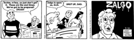

Zalgo is a meme where a person takes a popular picture/comic and corrupts it, with scary results. People can also use "Messy text" as a long way of saying "Zalgo wuz heer." Zalgo can be recognized in any context by the two words people say when Zalgo is near...
"He comes."
The Creature
Zalgo is a being that could best be described as a "horror," a creature of utmost terror. He is known as "He Who Waits Behind the Wall" and the "Nezperdian Hivemind" in some circles. He is an eyeless abomination with seven mouths. His right hand holds a dead star and his left hand holds the Candle Whose Light ss Shadow and is stained with the blood of Am Dhaegar. Six of his mouths speak in different tongues. When the time is right, the seventh shall sing the song that ends the Earth.
To invoke the hive-mind representing chaos.
Invoking the feeling of chaos.
Without order.
The Nezperdian hive-mind of chaos. Zalgo.
He Who Waits Behind the Wall.
ZALGO!
The Origin
Zalgo is the brainchild of Dave Kelly (aka "Shmorky"), a Flash animator and Something Awful "goon". It was first mentioned (but not seen) in parodies of syndicated newspaper comics on a semi-secret page on his official site.
Since the meme's spread, Shmorky has made several flash animations (in his own inimitable style, of course) referencing it, including ZALGO. Oddly, according to him Zalgo only affects comics, cartoons, and illustrations, not reality itself. Well, THAT certainly invalidates 99% of Zalgo pastas... unless, of course, he's lying...